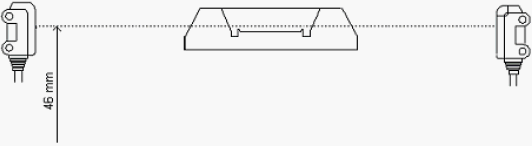
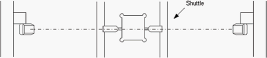
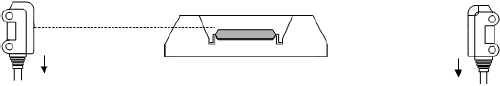
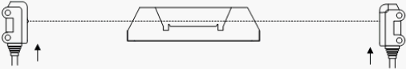
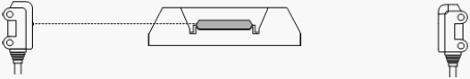

A3-2 How to adjust about device detection sensor of Output shuttle ( 2 )
Photoelectric sensor adjustment for NS-8040
Shuttle Unloading side IC Detection Adjustment (NS-8040)
1. Adjust the sensor height.
Light projection/receiving side - 46 mm from the base surface

2. Move the Index Shuttle 1 and 2 to the Unloading side. P23, P24
Confirm that the green lamp is ON. * If the green lamp is OFF, the axis of light projection/receiving may be misaligned. Adjust the sensor position.

3. Place the device in the shuttle pocket.
Confirm that the green lamp is ON and then, the red and green lamps are ON. * If the both lamps are not ON, lower the sensor position for light projection/receiving side.

4. Take out the device from the shuttle.
Confirm that only the green lamp is ON.
* If the green lamp is OFF, the sensor position is too low. Heighten the sensor position.

5. Place the device in the shuttle pocket.
Confirm that the red and green lamps are ON.
